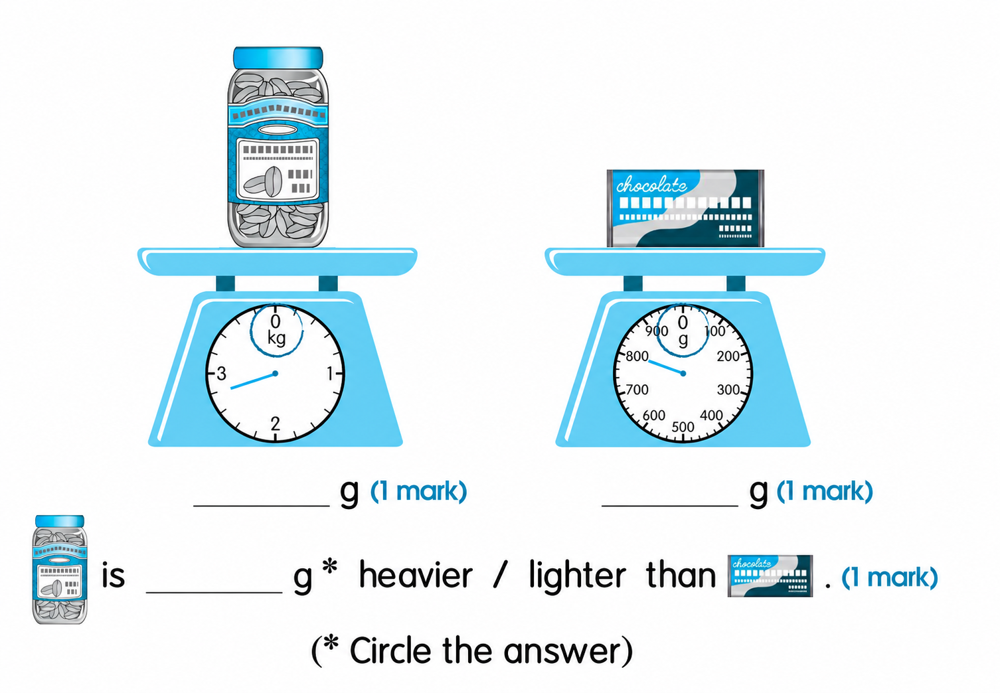
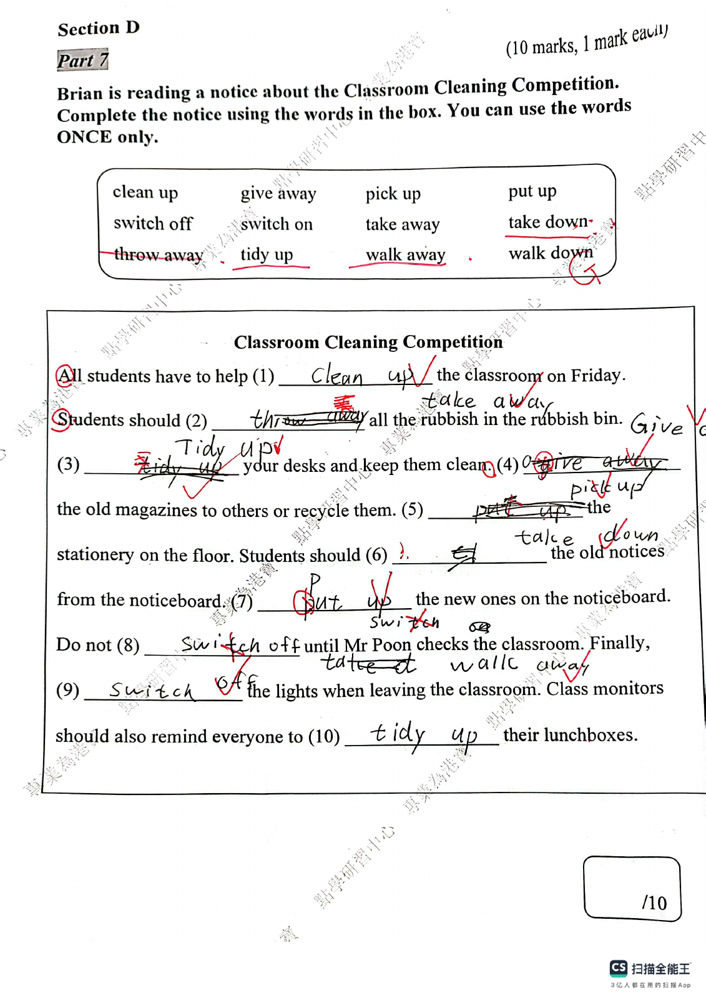
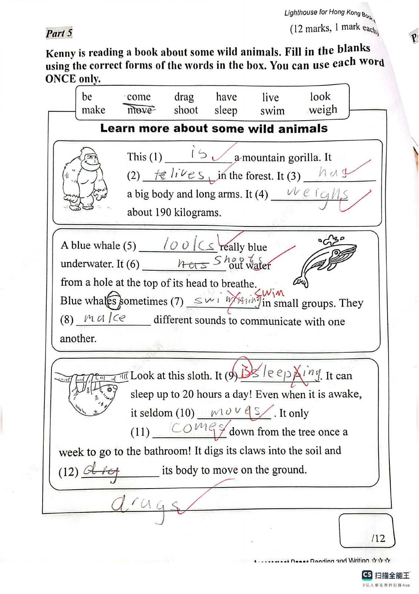

Answer: 2800 g; 800 g; 2000 g, heavier
已掌握
| # | 单词/词组 | 中文意思 | 例句/说明 | 已掌握 |
|---|---|---|---|---|
| noun 名词 | ||||
| 1 | hotel | 酒店 | We stayed in a hotel. | |
| 2 | gym | 健身房 | We exercise in the gym. | |
| 3 | sign | 标志 | Read the sign carefully. | |
| 4 | playground | 操场；游乐场 | The children run in the playground. | |
| 5 | cleaner | 清洁工人 | The cleaner works every day. | |
| 6 | music | 音乐 | We listen to music after school. | |
| 7 | Sunday | 周日 | We visit Grandma on Sunday. | |
| 8 | September | 九月 | School starts in September. | |
| verb 动词 | ||||
| 9 | stay | 待在 | I stay at home on rainy days. | |
| 10 | have a bath | 洗澡 | I have a bath before bed. | |
| verb/noun 动词/名词 | ||||
| 11 | match | 匹配；比赛 | Please match each word to the correct picture. We watched a football match. | |
| verb 动词 | ||||
| 12 | weigh | 称重 | We weigh the bag. | |
| 13 | celebrate | 庆祝 | We celebrate my birthday. | |
| phrase 短语 | ||||
| 14 | years old | 年龄 | I am seven years old. | |
| 15 | school bus | 校车 | We take the school bus every morning. | |
| noun phrase 名词短语 | ||||
| 16 | primary school student | 小学生 | I am a primary school student. | |
| adjective 形容词 | ||||
| 17 | correct | 正确 | This answer is correct. | |
| verb phrase 动词短语 | ||||
| 18 | visit a museum | 去博物馆 | We visit a museum with our teacher. | |
| adverb 副词 | ||||
| 19 | always | 总是 | I always wash my hands before eating. | |
| verb/noun 动词/名词 | ||||
| 20 | change | 改变，找零 | I can change my answer. I got fifty cents in change. | |
| # | 单词/词组 | 中文意思 | 例句/说明 | 已掌握 |
|---|---|---|---|---|
| adjective 形容词 | ||||
| 1 | cuddly | 软乎乎的；让人想抱的 | The toy bear is very cuddly. | |
| 2 | wrong | 错误的 | The answer is wrong. | |
| 3 | helpful | 乐于助人的 | Ben is helpful and carries the books for his teacher. | |
| 4 | tidy | 整洁的 | Please keep your bedroom tidy. | |
| 5 | fresh | 新鲜的 | Eric's mum helps him choose some fresh apples. | |
| noun 名词 | ||||
| 6 | photograph | 照片 | This photograph is beautiful. | |
| 7 | magazine | 杂志 | Read the magazine. | |
| 8 | knowledge | 知识 | Books give us knowledge. | |
| 9 | quantifier | 量词 | The word "some" is a quantifier. | |
| 10 | air conditioner | 空调 | We turn on the air conditioner when the room is very hot. | |
| 11 | container | 容器 | How often do you reuse bottles and containers? | |
| 12 | quantity | 数量 | The receipt shows the quantity of each item we bought. | |
| 13 | pudding | 布丁 | We ate Christmas pudding after dinner. | |
| 14 | stocking | 圣诞袜 | We also like to hang up Christmas stockings on our bedroom doors. | |
| noun phrase 名词短语 | ||||
| 15 | the school concert | 学校音乐会 | The school concert is on the ninth of July. | |
| 16 | unit price | 单价 | The unit price of each apple is two dollars. | |
| verb 动词 | ||||
| 17 | complete | 完成 | Please complete the sentence. | |
| verb/noun 动词/名词 | ||||
| 18 | knock | 敲门；敲门声 | Please knock on the door before you come in. I heard a knock at the door. | |
| verb 动词 | ||||
| 19 | yawn | 打哈欠 | I yawn when I am tired. | |
| 20 | throw | 扔，投掷 | Throw the ball and Milo will catch it. | |
| 21 | decide | 决定 | He decided to explore the enchanted forest. | |
| 22 | hear | 听见 | He heard the sound of rustling leaves. | |
| 23 | whisper | 低语；小声说 | He whispered in awe. | |
| phrase 短语 | ||||
| 24 | step on | 踩到 | Be careful not to step on the flowers. | |
| verb phrase 动词短语 | ||||
| 25 | play table tennis | 打乒乓球 | We play table tennis at the activity centre. | |
| 26 | reading storybooks | 读故事书 | I like reading storybooks. | |
| 27 | watch dragon boat races | 看龙舟比赛 | We watch dragon boat races every year. | |
| 28 | turn on | 打开（电器） | It only takes a few seconds to turn on your computer again. | |
| adjective/noun 形容词/名词 | ||||
| 29 | light | 明亮的；灯光 | The room is light and warm. Please turn off the light. | |
| conjunction 连词 | ||||
| 30 | and | 和；并且（表并列） | Christine and Susan are sisters, and they are very different. | |
| # | 单词/词组 | 中文意思 | 例句/说明 | 已掌握 |
|---|---|---|---|---|
| time/date 时间日期 | ||||
| 1 | April | 四月 | April is the fourth month. | |
| 2 | September | 九月 | September is the ninth month. | |
| 3 | December | 十二月 | December is the twelfth month. | |
| 4 | Sunday | 星期日 | Sunday is a weekend day. | |
| numbers 数字 | ||||
| 5 | two | 2 | Two is 2. | |
| 6 | ten | 10 | Ten is 10. | |
| 7 | sixteen | 16 | Sixteen is 16. | |
| 8 | nineteen | 19 | Nineteen is 19. | |
| ordinal numbers 序数 | ||||
| 9 | third | 第三 | This is the third shape. | |
| solid shape 立体图形 | ||||
| 10 | hexagonal pyramid | 六棱锥 | A hexagonal pyramid has one hexagonal base and six triangular side faces. | |
| 11 | face | 面 | A cube has six faces. | |
| plane shape 平面图形 | ||||
| 12 | trapezium | 梯形 | A trapezium has exactly one pair of parallel sides. | |
| 13 | parallelogram | 平行四边形 | A parallelogram has two pairs of parallel sides. | |
| geometry 几何 | ||||
| 14 | adjacent side | 邻边 | These are adjacent sides. | |
| 15 | acute angle | 锐角 | An acute angle is smaller than a right angle. | |
| # | 单词/词组 | 中文意思 | 例句/说明 | 已掌握 |
|---|---|---|---|---|
| numbers 数字 | ||||
| 1 | approximate value | 近似值 | The approximate value of 198 to the nearest ten is 200. | |
| operations 运算 | ||||
| 2 | total | 总共的 | Find the total number of apples. | |
| 3 | borrowing | 借位 | Borrowing helps when we subtract. | |
| geometry 几何 | ||||
| 4 | perpendicular | 垂直 | Perpendicular lines meet at a right angle. | |
| 5 | line segment | 线段 | Draw a line segment. | |
| 6 | parallel to each other | 相互平行 | The two lines are parallel to each other. | |
| question word 题目词 | ||||
| 7 | onwards | 向前；继续向前 | Count onwards from 20. | |
| 8 | match | 匹配 | Match the number to the word. | |
| answer 答案 | ||||
| 9 | result | 结果 | Check the result after you calculate. | |
| place value 位值 | ||||
| 10 | 5-digit number | 五位数 | 12,345 is a 5-digit number. | |
| comparison 比较 | ||||
| 11 | fewest | 最少的 | Which group has the fewest? | |
| 12 | lighter | 更轻的 | A pencil is lighter than a brick. | |
| 13 | heavier | 更重的 | A 3 kg bag is heavier than a 2 kg bag. | |
| time/date 时间日期 | ||||
| 14 | leap year | 闰年 | A leap year has 366 days. | |
| 15 | non-leap year | 平年 | A non-leap year has 365 days. | |
| 16 | large division | 大格（钟面上相邻两个小时数字之间的一格） | The hour hand moves one large division in one hour. | |
| position 位置 | ||||
| 17 | behind | 后面 | The bag is behind the chair. | |
| operations calculation 运算 | ||||
| 18 | A times B | A✖️B | A times B means multiplication. | |
| 19 | expression | 式子 | Write the expression in horizontal form. | |
| 20 | division | 除法 | Division is the opposite of multiplication. | |
| 21 | divisor | 除数 | The divisor divides the dividend. | |
| 22 | remainder | 余数 | The remainder is left after division. | |
| teacher math vocabulary 老师数学词汇 | ||||
| 23 | between ... and ... | 在……和……之间 | 7 is between 6 and 8. | |
| measurement 测量 | ||||
| 24 | centimetre | 厘米 | A centimetre is a small unit of length. | |
| 25 | distance | 距离 | Find the distance between the two points. | |
| 26 | height | 高度 | Measure the height of the box. | |
| 27 | millimeter | 毫米 | One millimeter is one tenth of a centimeter. | |
| 28 | weight | 重量 | The weight of this bag is 2 kg. | |
| 句型结构 | ||||
| 29 | Angle ... is larger than Angle ... | 角......大于角...... | Angle A is larger than Angle B. | |
| 30 | ... is to the south of ... | ......位于......的南侧。 | The library is to the south of the shop. | |


